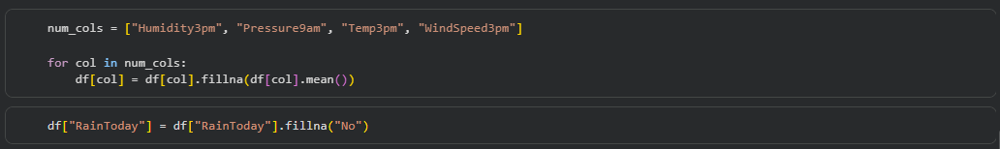
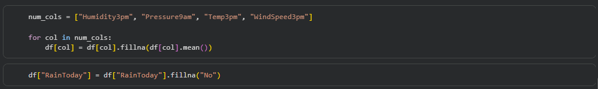
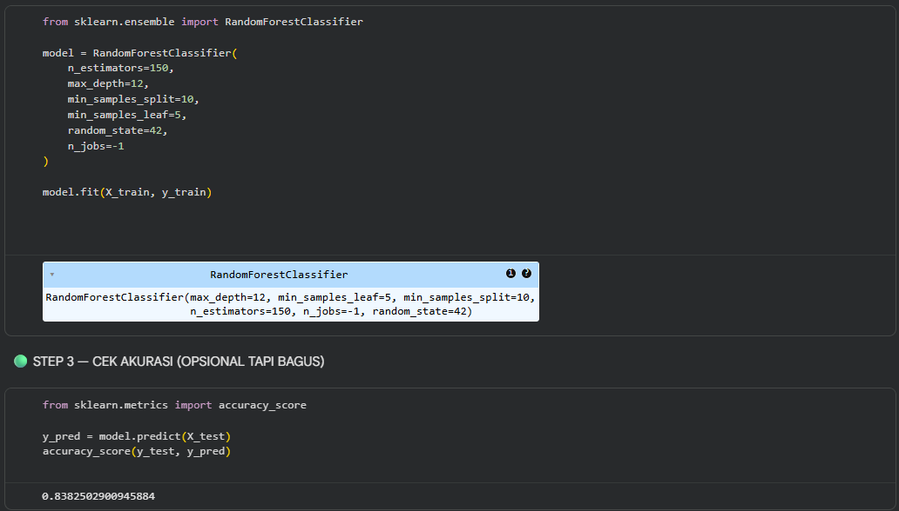
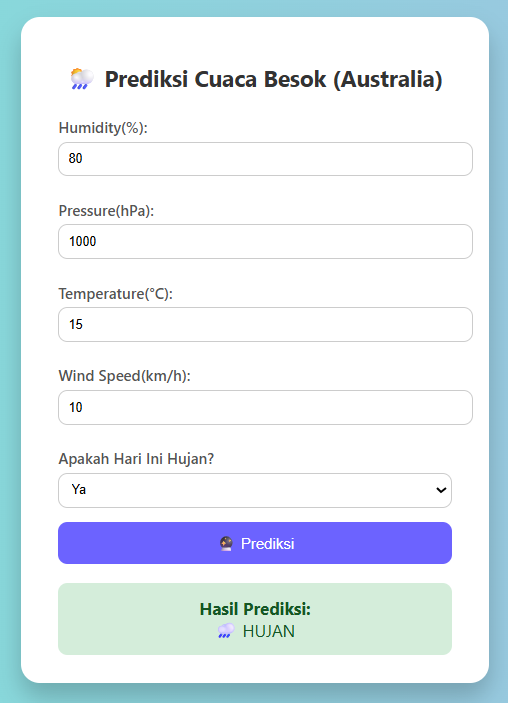

Project Details
Weather Prediction Web Application using Machine Learning
This project focuses on building an end-to-end weather forecasting system using machine learning and web technologies. The main objective is to predict whether it will rain tomorrow based on historical weather data and key meteorological indicators such as humidity, air pressure, temperature, wind speed, and recent rainfall conditions.
The project begins with raw weather data preprocessing, including handling missing values, data cleaning, and feature selection. A supervised machine learning model was trained using Scikit-learn and later deployed into a Flask-based web application. The system allows users to input weather parameters through a clean and intuitive interface to obtain real-time predictions.
This project demonstrates my ability to handle real-world datasets, apply machine learning techniques, and integrate trained models into a production-ready web application.
Tools Used: Python, Pandas, Scikit-learn, Flask, HTML, CSS, Git, GitHub
Skills Demonstrated: Data preprocessing, machine learning modeling, feature engineering, model deployment, backend development, debugging, and system integration
Workflow
Raw Data Exploration & Cleaning
Feature Engineering & Model Training
Web Deployment & User Interaction

Project Development Stages
- Data Source: /trisha2094/weatheraus
- Data Processing: colab.research.google.com
- Project URL: splendiddolpin/machinelearning-weatherprediction
- Detail URL: Project Details ....
The development of this weather prediction system was divided into three main stages: data preprocessing, machine learning model development, and web application deployment.
- Data Exploration & Preprocessing
- Machine Learning Model Training
- Web Deployment & Integration
The project started with exploring raw weather datasets containing multiple locations and various meteorological attributes. During this stage, missing values were identified and handled using appropriate strategies such as imputation and feature removal. Data types were standardized, irrelevant columns were excluded, and the dataset was prepared to ensure consistency and reliability for machine learning training.
Handling Missing Values & Feature Selection
 

In this stage, the cleaned dataset was used to train a supervised classification model using Scikit-learn. Feature encoding, train-test splitting, and model evaluation were performed to ensure accurate predictions. Multiple experiments were conducted to balance model accuracy and file size efficiency. The final trained model was serialized into a lightweight file for deployment.
Model Training & Evaluation
The final stage involved deploying the trained machine learning model into a Flask-based web application. A landing page was created to guide users, followed by a prediction page where users can input weather parameters. Input validation, error handling, and prediction result visualization were implemented to ensure a smooth and reliable user experience. The project was structured to be easily maintainable and ready for public deployment.
Flask Web Interface & Prediction Result
